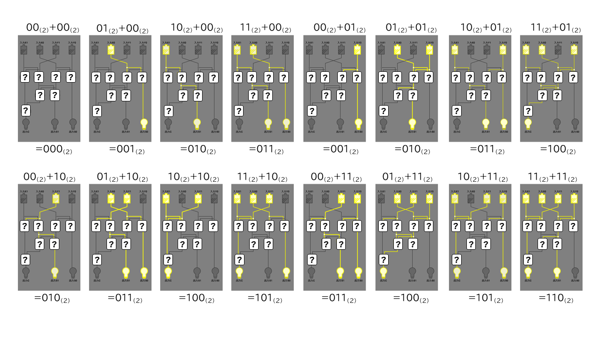

【Lv.3】
２進数２桁の足し算を行う回路を作ってみよう。
・右側のように、入力に応じて２進数の足し算の結果が出力されるように論理ゲートの組み合わせを切り替えてみよう。
・すべての入力パターンで、意図した出力が出るようにできたら成功！CPU発明家の称号をGETだ！

ヒント
(1)出力S0の計算
まずは【入力X0】＋【入力Y0】の"足し算"をする部分を作ろう。
※２ビットの"足し算"はLv1で組んだように、ANDとXORで作れるね。
(2)出力S1の計算
その【結果の桁上がりのビット】と【入力X1】と【入力Y1】を"足し算"をする部分を作ろう。
※３ビットの"足し算"はLv2で組んだように作れるね。
（①まずは【入力X1】＋【入力Y1】の"足し算"をする部分を作ろう。
②その【結果の１桁目のビット】と【(1)の桁上がり】を"足し算"をする部分を作ろう。
※"足し算"はLv1で組んだように、ANDとXORで作れるね。
③桁上がりとなる【出力Ｃ】は"どちらか"の足し算で発生していれば１になるから、残りの部分は・・・）
まえへ つぎへ